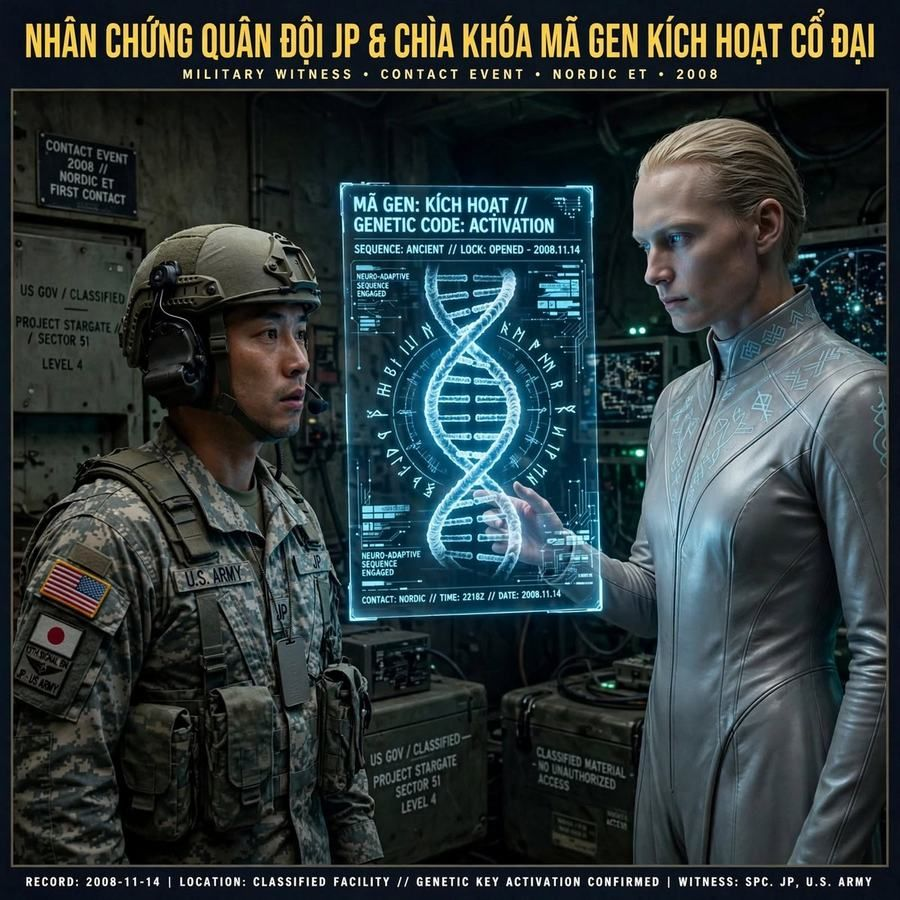
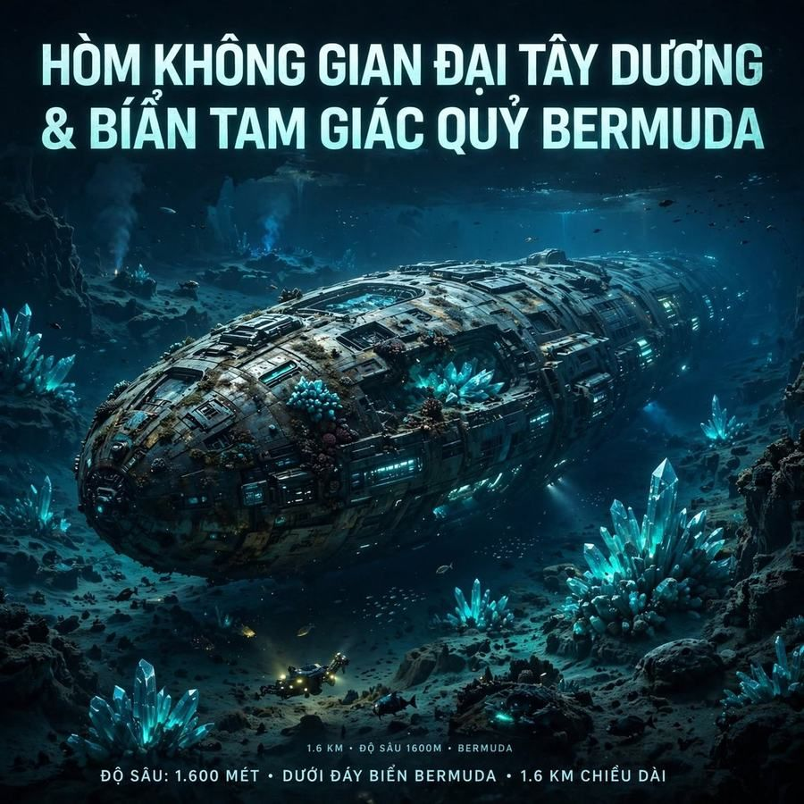
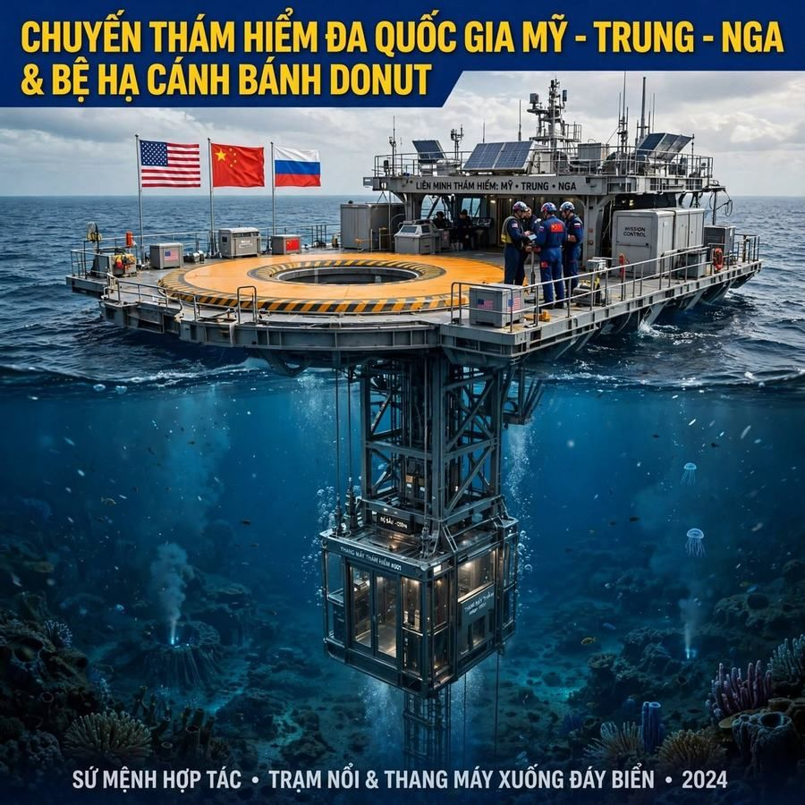
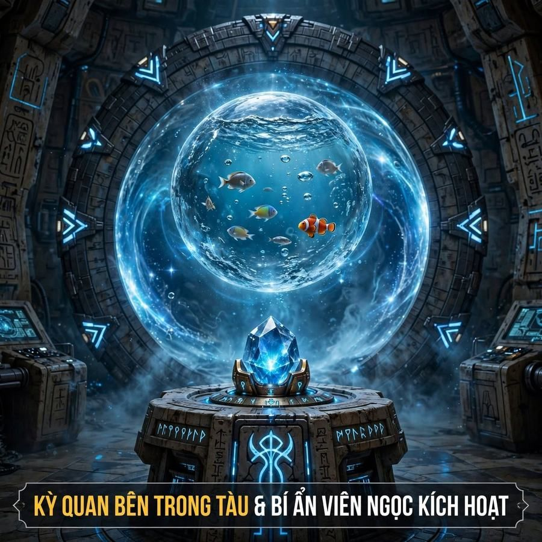
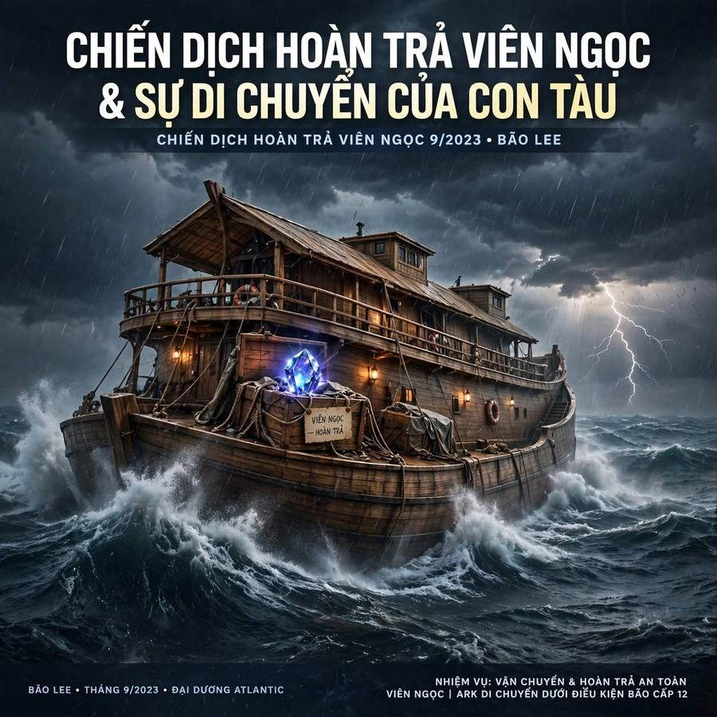
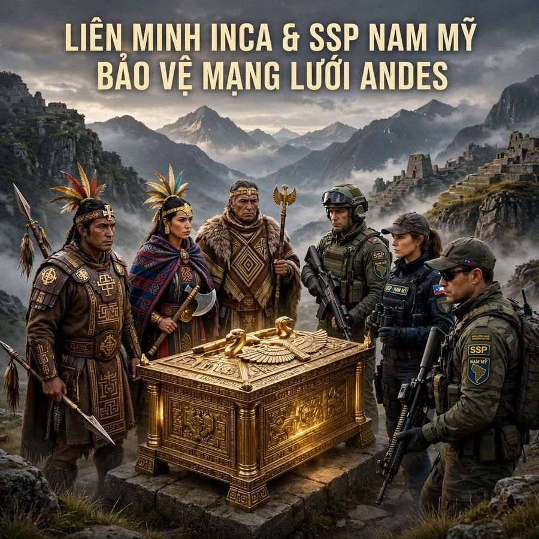

Trang chủ / Chuyên đề 6: Hòm Không Gian Cổ Đại / Kỳ 52
Chuyên đề 6 · Kỳ 52 / 80
SỨ MỆNH JP 2022 — KHÁM PHÁ HÒM KHÔNG GIAN KHỔNG LỒ DƯỚI ĐẠI TÂY DƯƠNG & VÙNG BIỂN FLORIDA

Ở Kỳ 1, chúng ta đã cùng nhau mở ra bức màn khởi nguyên về bản chất của các Hòm Không Gian Cổ Đại (Space Arks) — những đại chiến hạm tinh thể hữu cơ mang ngân hàng di truyền sinh học Paa-Taal do Liên Minh Các Đấng Sáng Lập (The Seeders) chôn giấu từ hàng triệu năm trước, cùng sự kiện kích hoạt tỏa nhiệt toàn cầu khi hạm đội Seeders tiến vào Hệ Mặt Trời tại khu vực Sao Mộc năm 2021. Hôm nay, chúng ta sẽ trực tiếp đi sâu vào chuỗi sứ mệnh thám hiểm ngầm chấn động nhất lịch sử exopolitics hiện đại: Sứ mệnh giải mật của quân nhân JP (Lục quân Hoa Kỳ) khi thâm nhập vào chiếc Hòm Không Gian khổng lồ nằm ẩn mình dưới lòng biển Đại Tây Dương — khu vực vùng biển Florida và Tam Giác Quỷ Bermuda! Nhân chứng JP là ai và tại sao mã gen di truyền của ông lại có khả năng kích hoạt các cấu trúc tàu cổ đại? Bệ hạ cánh hình bánh donut (Donut-shaped Platform) và cuộc du hành bằng thang máy đâm thẳng xuống đáy đại dương diễn ra ra sao? Sự hợp tác bí mật giữa quân đội ba nước Mỹ, Trung Quốc và Nga bên trong con tàu diễn ra thế nào? Kỳ quan quả cầu nước lơ lửng có cá bơi bên trong kết nối Cổng Sao (Stargate) lên Mặt Trăng ra sao? Bí ẩn về Viên Ngọc Kích Hoạt (Activation Jewel) cùng mối liên hệ với văn minh cổ đại Atlantis và Người Kiến (Ant People) dưới lòng đất Florida bị hé lộ thế nào?
1. NHÂN CHỨNG QUÂN ĐỘI JP & CHÌA KHÓA MÃ GEN KÍCH HOẠT CỔ ĐẠI
Một trong những nguồn tin mật đáng tin cậy nhất được Tiến sĩ Michael Salla giải mật chính là lời khai trực tiếp từ JP — một quân nhân đang phục vụ trong Lục quân Hoa Kỳ. A. Dòng Máu Kích Hoạt Di Truyền Bẩm Sinh
- Cuộc Tiếp Xúc Khởi Nguồn Năm 2008: JP đã có cuộc tiếp xúc trực tiếp với các sinh mệnh dạng người Bắc Âu (Nordic ETs) từ năm 2008 tại Brazil. Họ đã giúp kích hoạt các tần số năng lượng và chuỗi mã gen ẩn bên trong bản thể của ông.
- Chìa Khóa Mở Cửa Tàu Cổ Đại: Nhờ mang tần số dao động di truyền tương thích bẩm sinh, JP được các cơ quan tình báo và quân đội Hoa Kỳ tuyển chọn làm nhân sự an ninh nòng cốt. Sự xuất hiện của ông giúp các thiết bị tinh thể trên các Hòm Không Gian nhận diện mã gen, bừng sáng và mở cửa an toàn cho đoàn thám hiểm. B. Mạng Lưới Sứ Mệnh Bí Mật Của Lục Quân Mỹ
- Trực Tiếp Báo Cáo Cho TS. Michael Salla: JP được phép chia sẻ chi tiết về các chuyến đi thám hiểm Hòm Không Gian dưới sự giám sát của các lực lượng ủng hộ bạch nhật hóa (White Hats), nhằm chuẩn bị tâm lý cho công chúng trước thời khắc Full Disclosure toàn cầu.

2. HÒM KHÔNG GIAN ĐẠI TÂY DƯƠNG & BÍ ẨN TAM GIÁC QUỶ BERMUDA
Dưới vùng biển mù sương ngoài khơi bờ biển Florida và khu vực Tam Giác Quỷ Bermuda là nơi an nghỉ của chiếc Hòm Không Gian lớn nhất từng được phát hiện trên Trái Đất. A. Kích Thước Khổng Lồ Hình Bầu Dục
- Đại Chiến Hạm Dài Hơn 1,6 Kilômét: Con tàu cổ đại có dạng hình bầu dục (Oval-shaped Craft), kéo dài ít nhất 1 dặm (hơn 1,6 km), chìm một phần dưới lớp trầm tích đáy đại dương.
- Cấu Trúc Tinh Thể Tự Phát Sáng: Khác với các thiết bị kim loại bị ăn mòn theo thời gian, vỏ con tàu làm bằng vật liệu hữu cơ lai thạch anh, tỏa ra nguồn ánh sáng xanh ngọc lam dịu nhẹ và tự duy trì môi trường áp suất hoàn hảo. B. Giải Mã Hiện Tượng Tam Giác Quỷ Bermuda
- Đoản Mạch Lưới Địa Từ & Trường Đoản Trọng Lực: Sự cuộn xoáy từ trường từ bộ vi xử lý cổ đại của Hòm Không Gian đã tạo ra hiện tượng đoản mạch lưới điện từ trường tự nhiên tại khu vực Bermuda.
- Sự Mất Tích Của Tàu Thuyền & Máy Bay: Khi từ trường Hòm Không Gian bị kích hoạt đột ngột, nó bẻ cong trọng lực và mở ra các vi cổng không-thời gian, giải thích cho hàng thập kỷ biến mất bí ẩn của tàu thuyền và phi cơ khi di chuyển qua vùng biển này!

3. CHUYỂN THÁM HIỂM ĐA QUỐC GIA MỸ - TRUNG - NGA & BỆ HẠ CÁNH BÁNH DONUT
Để tiếp cận con tàu ngầm dưới đại dương, một cơ sở hạ tầng quân sự đặc biệt đã được thiết lập. A. Sứ Mệnh Hợp Tác Có Đi Có Lại Mỹ - Trung - Nga
- Sự Đổi Trác Tri Thức Không Gian: Sau khi phía Trung Quốc cho phép đoàn thám hiểm Mỹ tiến vào nghiên cứu con tàu ngoài hành tinh khổng lồ do xe tự hành Yutu-2 phát hiện ở vùng tối Mặt Trăng, Mỹ đã đáp lễ bằng cách mở cửa cho các nhà khoa học và quân nhân Trung Quốc cùng Nga gia nhập sứ mệnh khám phá Hòm Không Gian Đại Tây Dương. B. Bệ Hạ Cánh Bánh Donut & Thang Máy Đâm Xuống Đáy Biển
- Di Chuyển Bằng Máy Bay Osprey & TR-3B: Đoàn thám hiểm gồm 20 nhân sự được vận chuyển bằng máy bay Osprey cất cánh từ các căn cứ ở Florida đến một bệ nổi hình bánh donut khổng lồ (Donut-shaped Floating Platform) đặt cố định trên một tàu ngầm hải quân tại vùng biển Bermuda.
- Thang Máy Áp Suất Siêu Chiều: Từ bệ nổi, một hệ thống thang máy thẳng đứng đâm sâu hàng trăm mét xuyên qua làn nước biển, đưa trực tiếp các sĩ quan và nhà khoa học đi vào cửa sổ đổ bộ bên trong lòng Hòm Không Gian!

4. KỲ QUAN BÊN TRONG TÀU & BÍ ẨN VIÊN NGỌC KÍCH HOẠT (ACTIVATION JEWEL)
Nội thất bên trong Hòm Không Gian Đại Tây Dương cất giữ những kỳ quan vượt xa trí tưởng tượng của khoa học hiện đại. A. Quả Cầu Nước Lơ Lửng Nối Cổng Sao (Stargate)
- Khối Nước Trôi Nổi Giữa Không Trung: JP chứng kiến những quả cầu nước màu xanh lam khổng lồ lơ lửng tự do giữa các đại sảnh mà không cần bình chứa. Bên trong các quả cầu nước này có các loài cá cổ đại bơi lội bình an.
- Cánh Cổng Dịch Chuyển Tức Thời Lên Mặt Trăng: Quả cầu nước này đóng vai trò là một Cổng Sao (Stargate). Khi các nhân sự tiến qua khối nước năng lượng, họ có thể dịch chuyển tức thời đến Hòm Không Gian trên Mặt Trăng hoặc các căn cứ khác trong Hệ Mặt Trời! B. Viên Ngọc Tinh Thể Kích Hoạt & Văn Minh Atlantis / Người Kiến
- Trí Tuệ Của Thủ Đô Atla (Atlantis): Con tàu được xác định là cơ sở năng lượng nòng cốt từng xây dựng nên thủ đồ Atla của văn minh Atlantis cổ đại.
- Viên Ngọc Pha Lê Kích Hoạt (Activation Jewel): Sâu bên trong trung tâm tàu là một rương tinh thể chứa "Viên Ngọc Kích Hoạt" tỏa ra ánh sáng cực mạnh. Viên ngọc này chứa mã tần số điều khiển giúp kích hoạt mạng lưới các Hòm Không Gian và các Bậc Thầy/Người Khổng Lồ đang ngủ đông (Sleeping Giants) tại các hệ thống hang động ngầm dưới lòng đất Florida và văn minh Người Kiến (Ant People).

5. CHIẾN DỊCH HOÀN TRẢ VIÊN NGỌC & SỰ DI CHUYỂN CỦA CON TÀU
Quá trình thám hiểm Hòm Không Gian Đại Tây Dương diễn ra với nhiều biến chuyển dồn dập về mặt địa chính trị thiên hà. A. Sự Tiếp Quản Của Các Sinh Mệnh Bắc Âu (Nordic ETs)
- Bảo VỆ Cổ Vật Trước Sự Chiếm Đoạt: Khi một số lực lượng bề mặt cố tình mang Viên Ngọc Kích Hoạt rời khỏi tàu để nghiên cứu riêng, các thực thể Bắc Âu (Nordic ETs) hòa bình đã can thiệp, yêu cầu trao trả viên ngọc về đúng vị trí để tránh làm mất cân bằng lưới từ trường địa cầu.
- Sứ Mệnh Hoàn Trả Viên Ngọc (Tháng 9/2023): JP cùng nhóm đặc nhiệm đã thực hiện sứ mệnh đưa viên ngọc quay trở lại lòng tàu. Ngay khi viên ngọc được đặt về vị trí cũ, toàn bộ con tàu bùng nổ dải quang phổ xanh lam rực rỡ, phát ra nhịp đập từ trường làm thức tỉnh các cấu trúc cổ đại toàn cầu! B. Tàu Dịch Chuyển Vị Trí Dưới Lớp Màng Bão Lee
- Tự Động Di Chuyển Đến Vùng Biển Sâu: Được bao bọc bởi năng lượng bão Lee trên bề mặt, Hòm Không Gian Đại Tây Dương bắt đầu di chuyển tự động với tốc độ kỳ diệu, tự di tản từ khu vực Bermuda ra vùng nước sâu hơn ở giữa Đại Tây Dương để thiết lập cơ chế bảo vệ vĩnh viễn trước sự dòm ngó tiêu cực.

6. LỜI KẾT KỲ 2: KHAI MỞ DI SẢN KHỎI NGUYÊN BẠCH NHẬT
Kỳ 2 của chuyên đề 6 khép lại mang đến những góc nhìn bừng tỉnh về thế giới dưới đại dương:
- Thù Đổ Atlantis Đang Thức Tỉnh: Hòm Không Gian Đại Tây Dương chính là chứng nhân lịch sử sống động của nền văn minh Atlantis cổ đại, mang theo tri thức giải phóng năng lượng cho nhân loại.
- Tri Thức Là Của Toàn Thể Nhân Loại: Không một tập đoàn hay quốc gia đơn lẻ nào có quyền sở hữu hay giấu kín các Hòm Không Gian. Di sản này sinh ra để phục vụ cho sự thăng hoa tâm thức chung của toàn thể con người Trái Đất!
